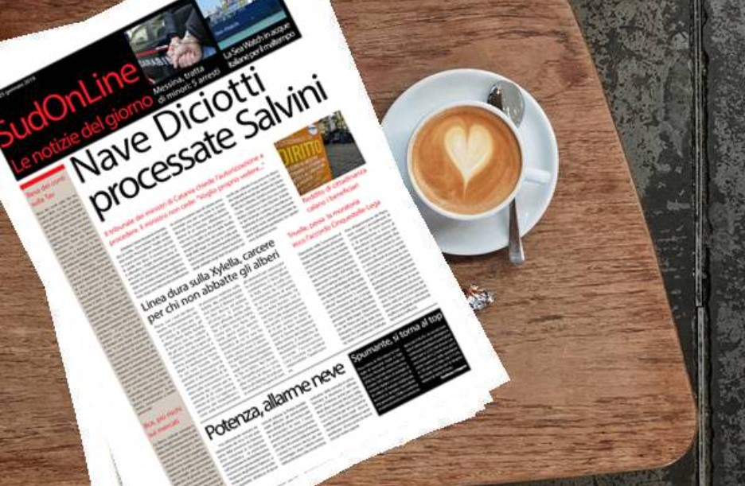

L'autorizzazione a procedere, nell'ordinamento processuale italiano, è un permesso di svolgere un'azione penale rilasciato alla magistratura da altra autorità. Si tratta di un istituto immunitario che assoggetta il procedimento penale all'atto autorizzatorio di un organo non giurisdizionale.
Per autorizzazione a procedere si intende un atto con cui determinati organi rimuovono un ostacolo alla prosecuzione dell'azione penale nei confronti di un determinato soggetto (art. 343 c.p.p.); essa viene richiesta dal pubblico ministero (art. 344 c.p.p.).
Fino al 1993 la Costituzione stabiliva che nessun membro del Parlamento poteva essere sottoposto a procedimento penale senza l’autorizzazione della Camera di appartenenza. Le origini dell’istituto risalivano nel tempo e si collegavano all’esigenza di evitare che iniziative giudiziarie persecutorie o pretestuose potessero interferire con il corretto funzionamento della funzione legislativa, incidendo sulle maggioranze parlamentari o impedendo la partecipazione alle sedute di singoli parlamentari.
Col tempo però l’autorizzazione a procedere si era trasformata in un vero e proprio privilegio corporativo che assicurava ai parlamentari una immunità penale pressoché assoluta: in uno scambio di reciproci favori tra le varie forze politiche, l’autorizzazione a procedere non veniva mai concessa, sino al punto da negarla anche in caso di reati – ad esempio l’omicidio colposo a seguito di incidente stradale – in cui non era ravvisabile alcun sia pur remoto fumus persecutionis.
Autorizzazioni a procedere presentate dal 1948 al 1993:
| Legislatura | Presentate | Concessioni |
| I | 172 | 27 |
| II | 94 | 1 |
| III | 58 | 7 |
| IV | 75 | 5 |
| V | 69 | 4 |
| VI | 159 | 40 |
| VII | 67 | 27 |
| VIII | 103 | 42 |
| IX | 83 | 21 |
| X | 112 | 12 |
| XI | 233 | 76 |
Anche a seguito della dirompente Tangentopoli dei primi anni Novanta del secolo scorso, che aveva coinvolto decine di parlamentari e ministri, la legge costituzionale n. 3 del 1993 ha tempestivamente e profondamente modificato l’istituto dell’autorizzazione a procedere previsto dall’articolo 68 della Costituzione.
Da allora il magistrato può iniziare il procedimento penale senza alcuna autorizzazione della Camera alla quale il parlamentare appartiene. Forme di autorizzazione intervengono in un momento successivo, a tutela della libertà del singolo parlamentare di svolgere le proprie funzioni e quindi in ultima analisi a tutela del corretto funzionamento del Parlamento nel suo complesso. Da una parte sta l’esigenza della giustizia di compiere gli atti necessari all’accertamento dei reati contestati al parlamentare, dall’altro vi è l’interesse del Parlamento di tutelare i propri rappresentanti da ingerenze e limitazioni della libertà personale che potrebbero ostacolare l’esercizio della funzione legislativa.
Il contemperamento tra esigenze della giustizia e tutela dell’attività parlamentare si è tradotto in una disciplina costituzionale che sottopone alla autorizzazione della Camera di appartenenza gli atti di perquisizione personale o domiciliare, nonché l’arresto o altre forme di privazione della libertà o detenzione del parlamentare, salvi i casi di arresto in flagranza di reato e di privazione della libertà in esecuzione di una sentenza irrevocabile di condanna.
Infine l’autorizzazione è richiesta per sottoporre i membri del Parlamento ad intercettazione di conversazioni o comunicazioni e a sequestro di corrispondenza.

Diversa è la disciplina nel caso di reati commessi dal Presidente del consiglio o dai ministri nell’esercizio delle loro funzioni.Le cronache istituzionali hanno di recente avuto occasione di parlarne in relazione al caso Diciotti, che ha interessato l’ex ministro dell’interno Matteo Salvini. Nei confronti dei reati ministeriali l’intervento del potere politico è più diretto e immediato: a seguito di una riforma costituzionale del 1989 i reati commessi dal Presidente del consiglio e dai ministri sono giudicati dalla magistratura ordinaria, che potrà procedere solo se autorizzata dal Parlamento: in particolare, dalla camera di appartenenza se il ministro è parlamentare, dal Senato se non è parlamentare.
Il Parlamento può negare l’autorizzazione ove ritenga sulla base di una valutazione squisitamente politica e insindacabile, che il ministro inquisito abbia agito per la tutela di un interesse dello Stato costituzionalmente rilevante ovvero “per il perseguimento di un preminente interesse pubblico nell’esercizio della funzione di governo”.